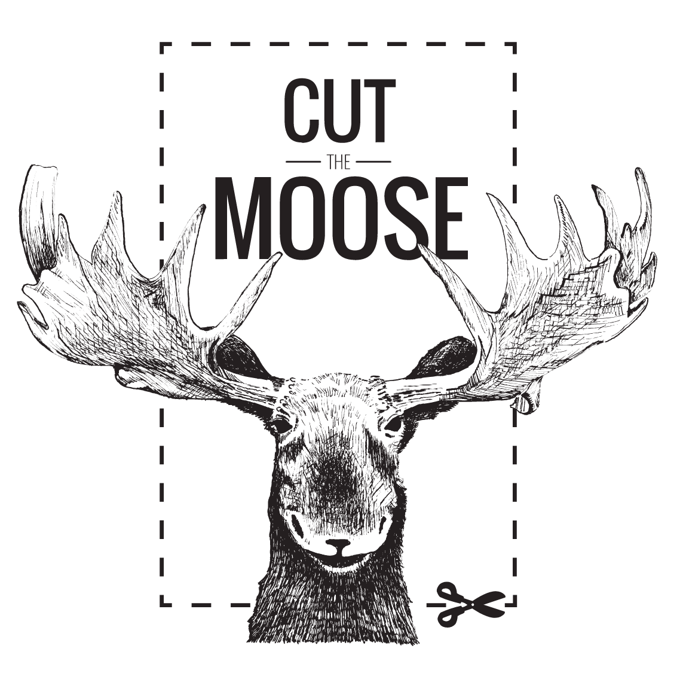

Cut Moose
Point de fuite - Vanishing Point
investigates the way the European Media talks about immigration through participatory games and surreal imagery on a sculpturally stunning set.
RichMix, 24/06/2016
Point of fuite - Vanishing Point
is part of the series
Marcel
initiated by Ursa Maior
